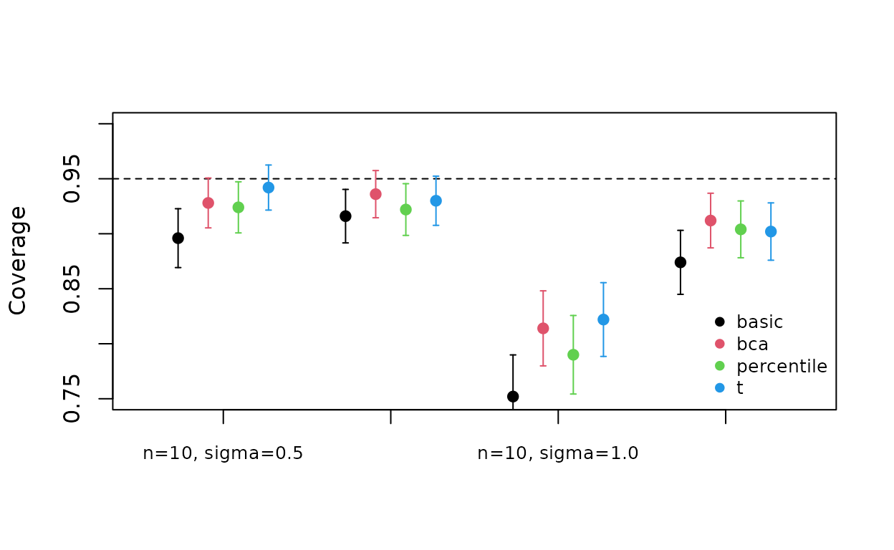

vignettes/simulation-studies.Rmd
simulation-studies.RmdSimulation studies are how statisticians find out whether a method
works. Like any experiment, they need a pre-specified design, an
adequate number of replicates, and uncertainty statements about their
results. This vignette follows the ADEMP structure of Morris et al. (2019) and runs a small study. The
full-size version, with more replicates and scenarios, is in the
analysis/ directory of the repository.
To compare the coverage of four 95% confidence intervals for a population mean when the data are right-skewed and the sample is small.
Samples of size from a log-normal distribution with , with (moderate and strong skew). That is a factorial design.
scenarios <- expand.grid(n = c(10, 40), sigma = c(0.5, 1))
generate <- function(n, sigma) rlnorm(n, meanlog = 0, sdlog = sigma)
scenarios
#> n sigma
#> 1 10 0.5
#> 2 40 0.5
#> 3 10 1.0
#> 4 40 1.0The analysis function returns one row per method:
analyse <- function(x) {
tt <- stats::t.test(x)
bs <- boot_ci(x, mean, R = 499, type = c("percentile", "bca", "basic"))
data.frame(
method = c("t", bs$intervals$type),
estimate = mean(x),
se = c(sd(x) / sqrt(length(x)), rep(bs$se, 3)),
lower = c(tt$conf.int[1], bs$intervals$lower),
upper = c(tt$conf.int[2], bs$intervals$upper)
)
}The key measure is coverage. To estimate a coverage near 95% with a Monte Carlo SE of 1 percentage point, we need
sim_n_required(0.01, p = 0.95)
#> [1] 475replicates per scenario. To keep this vignette fast we use 500, which
gives MCSE
point. The study in analysis/ uses 5,000 (MCSE
points).
res <- run_simulation(generate, analyse, n_sim = 500, scenarios = scenarios,
seed = 20240901)
res$theta <- exp(res$sigma^2 / 2)
res
#> <rdsc_simulation> 8000 result rows from 4 scenario(s) x 500 replicates
#> seed = 20240901, backend = sequential, elapsed = 11.8 s, failures = 0
#>
#> n sigma .scenario .rep method estimate se lower upper
#> 1 10 0.5 1 1 t 1.078433 0.1088680 0.8321570 1.324710
#> 2 10 0.5 1 1 percentile 1.078433 0.1031589 0.8781044 1.281830
#> 3 10 0.5 1 1 bca 1.078433 0.1031589 0.8438396 1.251093
#> 4 10 0.5 1 1 basic 1.078433 0.1031589 0.8750367 1.278763
#> 5 10 0.5 1 2 t 1.097818 0.1650518 0.7244453 1.471191
#> 6 10 0.5 1 2 percentile 1.097818 0.1640574 0.8053878 1.423055
#> .error .warning theta
#> 1 <NA> <NA> 1.133148
#> 2 <NA> <NA> 1.133148
#> 3 <NA> <NA> 1.133148
#> 4 <NA> <NA> 1.133148
#> 5 <NA> <NA> 1.133148
#> 6 <NA> <NA> 1.133148
#> ...Every replicate gets its own L’Ecuyer-CMRG stream (L’Ecuyer et al. 2002). The results are
therefore identical if the study is re-run in parallel, e.g. with
future::plan("multisession") and
backend = "future".
perf <- sim_performance(res, true = "theta", by = c("n", "sigma", "method"))
cov <- subset(perf, measure == "coverage")
cov[, c("n", "sigma", "method", "estimate", "mcse")]
#> Simulation performance measures (Morris et al., 2019)
#>
#> n sigma method estimate (MCSE)
#> 10 0.5 basic 0.896 (0.014)
#> 40 0.5 basic 0.916 (0.012)
#> 10 1.0 basic 0.752 (0.019)
#> 40 1.0 basic 0.874 (0.015)
#> 10 0.5 bca 0.928 (0.012)
#> 40 0.5 bca 0.936 (0.011)
#> 10 1.0 bca 0.814 (0.017)
#> 40 1.0 bca 0.912 (0.013)
#> 10 0.5 percentile 0.924 (0.012)
#> 40 0.5 percentile 0.922 (0.012)
#> 10 1.0 percentile 0.790 (0.018)
#> 40 1.0 percentile 0.904 (0.013)
#> 10 0.5 t 0.942 (0.010)
#> 40 0.5 t 0.930 (0.011)
#> 10 1.0 t 0.822 (0.017)
#> 40 1.0 t 0.902 (0.013)Coverage estimates should always be plotted with their Monte Carlo uncertainty:
cov$label <- sprintf("n=%d, sigma=%.1f", cov$n, cov$sigma)
methods <- unique(cov$method)
labels <- unique(cov$label)
pos <- outer(seq_along(labels), (seq_along(methods) - 2.5) * 0.18, "+")
plot(NA, xlim = c(0.5, length(labels) + 0.5), ylim = c(0.75, 1),
xaxt = "n", xlab = "", ylab = "Coverage")
axis(1, at = seq_along(labels), labels = labels, cex.axis = 0.8)
abline(h = 0.95, lty = 2)
for (m in seq_along(methods)) {
d <- cov[cov$method == methods[m], ]
x <- pos[match(d$label, labels), m]
arrows(x, d$estimate - 1.96 * d$mcse, x, d$estimate + 1.96 * d$mcse,
angle = 90, code = 3, length = 0.02, col = m)
points(x, d$estimate, pch = 19, col = m)
}
legend("bottomright", legend = methods, col = seq_along(methods), pch = 19,
bty = "n", cex = 0.8)
Three findings stand out. (i) All methods under-cover when the skew
is strong, and badly so when
:
bootstrap intervals for a mean are too narrow in small samples, partly
because the plug-in variance divides by
rather than
(Davison and Hinkley 1997). (ii) The basic
interval is clearly the worst, as theory predicts for skewed statistics,
because it reflects the bootstrap distribution the wrong way. (iii) With
500 replicates, the differences between the
,
percentile and BCa intervals are mostly comparable to their Monte Carlo
SEs, so this small study cannot rank them. Without
MCSEs it would be tempting to over-interpret those differences. The
larger study in analysis/ is designed to resolve them.
sim_performance() also reports bias, empirical and
model-based SEs, MSE and interval width:
subset(perf, method == "t" & measure %in% c("bias", "empirical_se",
"rel_error_model_se"))
#> Simulation performance measures (Morris et al., 2019)
#>
#> n sigma method measure estimate (MCSE) n_rep n_missing
#> 10 0.5 t bias 0.006 (0.008) 500 0
#> 10 0.5 t empirical_se 0.185 (0.006) 500 0
#> 10 0.5 t rel_error_model_se 3.926 (4.135) 500 0
#> 40 0.5 t bias -0.008 (0.004) 500 0
#> 40 0.5 t empirical_se 0.093 (0.003) 500 0
#> 40 0.5 t rel_error_model_se 1.767 (3.365) 500 0
#> 10 1.0 t bias -0.043 (0.029) 500 0
#> 10 1.0 t empirical_se 0.639 (0.020) 500 0
#> 10 1.0 t rel_error_model_se 1.921 (5.650) 500 0
#> 40 1.0 t bias 0.006 (0.016) 500 0
#> 40 1.0 t empirical_se 0.348 (0.011) 500 0
#> 40 1.0 t rel_error_model_se 0.118 (4.581) 500 0Following Morris et al. (2019), a report should state:
attr(res, "seed"));sum(!is.na(res$.error)));